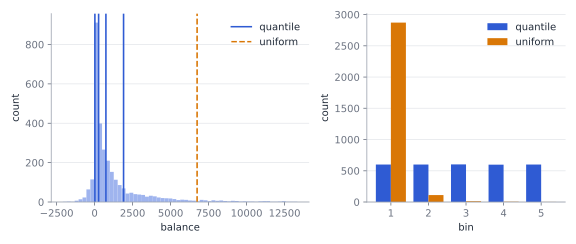
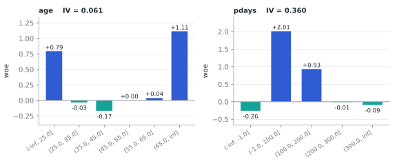
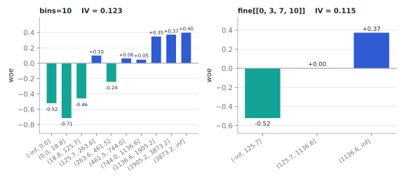
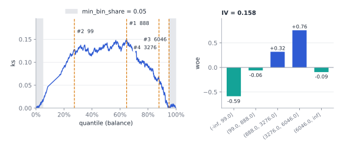
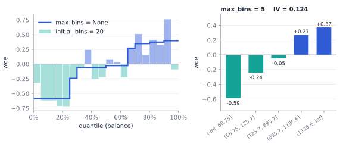

分箱#
bin_edges() 在基准样本上拟合数值分箱边界，并以数组形式返回，供 pandas.cut 使用。基准样本可以是列表、NumPy 数组或 pandas Series。请保存这个数组：与基准样本比较的每个样本都必须使用同一组边界。
在信用评分中，分箱是评分卡开发的变量分组环节：连续变量被划分为少数几组，每组的 WOE 都可以解读、向业务解释并持续监控。本页比较选择边界的几种方式。
分箱位于 单变量概况 之后（概况用快速分箱对候选变量排序），位于 证据权重 之前（证据权重衡量并编码各分组）。 bin_edges 只根据取值选择边界； chimerge_edges() 、 tree_edges() 、 ks_edges() 、 monotonic_edges() 和 optimal_edges() 还会用到目标变量， variance_edges() 用到连续型响应（例如实际 LGD）， cut() 则对样本分组，并让每个特殊值编码单独成组。
类别变量也按同样的两步分组： category_groups() 归并稀有类别， chimerge_groups() 合并事件率相近的类别， group_categories() 把分组映射应用到样本上。
等频与等距边界#
等频分箱按基准样本中的秩划分观测，等距分箱按取值范围等宽划分。
>>> import pandas as pd
>>> from kivi.binning import bin_edges
>>> values = pd.Series([1, 2, 2, 3, 4, 5, 8, 13, 21, 34])
>>> bin_edges(values, bins=3)
array([-inf, 3., 8., inf])
>>> bin_edges(values, bins=3, method="uniform")
array([-inf, 12., 23., inf])
等频分箱中各箱的观测数大致相同，适合偏态变量。等距分箱保持宽度一致，长尾可能让部分箱几乎为空。
账户余额是典型的金融数据：大多数客户余额不高，少数客户余额极大。在银行数据上，等频分箱把基准样本均匀切开，而等距分箱几乎把所有人都放进第一个箱。
>>> from kivi.datasets import load_bank
>>> data = load_bank()
>>> reference = data.iloc[:3000]
>>> balance = reference["balance"]
>>> quantile = pd.cut(balance, bin_edges(balance, bins=5))
>>> uniform = pd.cut(balance, bin_edges(balance, bins=5, method="uniform"))
>>> quantile.value_counts(sort=False).tolist()
[600, 600, 602, 598, 600]
>>> uniform.value_counts(sort=False).tolist()
[2871, 111, 12, 5, 1]

左图：余额分布（截断于第 99 百分位），实线为等频边界，虚线为第一个等距边界。右图：每箱的客户数。等距分箱让高位的箱几乎为空，这些箱的 WOE 只能依赖极少数客户。#
自定义边界#
边界不一定来自 bin_edges()。任何递增数组都可以传给 pandas.cut 和指标函数，因此政策分段和专家边界也能用于同一流程。请保留两端的无穷边界，确保之后的任何取值都有归属。
>>> import numpy as np
>>> from kivi.woe import woe_table
>>> age_bands = np.array([-np.inf, 25, 35, 45, 55, 65, np.inf])
>>> by_band = woe_table(pd.cut(reference["age"], age_bands), reference["target"]).sort_index()
>>> by_band["woe"].round(2).tolist()
[0.79, -0.03, -0.17, -0.0, 0.04, 1.11]
风控数据常用数字编码某种状态，例如用 -1 表示“从未联系”，用 999 表示“无记录”。在银行数据中，82% 的基准样本客户 pdays == -1，因此等频分箱会把该变量压缩成一个箱，信息值随之丢失。在 -1 处设置边界，可以让这个编码单独成箱。
>>> import warnings
>>> with warnings.catch_warnings(record=True) as caught:
... warnings.simplefilter("always")
... collapsed = bin_edges(reference["pdays"], bins=5)
>>> collapsed
array([-inf, inf])
>>> print(caught[0].message)
tied edges leave 1 of the 5 requested bins; the value -1 makes up 82% of the fitted values, consider passing it in special
>>> pdays_edges = np.array([-np.inf, -1, 100, 200, 300, np.inf])
>>> pdays = woe_table(pd.cut(reference["pdays"], pdays_edges), reference["target"]).sort_index()
>>> pdays[["event", "non_event", "woe"]].round(3)
event non_event woe
bin
(-inf, -1.0] 228 2247 -0.257
(-1.0, 100.0] 47 48 2.010
(100.0, 200.0] 46 138 0.932
(200.0, 300.0] 10 77 -0.010
(300.0, inf] 17 142 -0.092
>>> print(f"IV = {pdays['iv'].sum():.3f}")
IV = 0.360

左图：年龄分段呈 U 形，最年轻和最年长的客户更可能认购。右图：-1 编码单独成箱后，200 天内在上一轮营销中被联系过的客户明显突出。#
在 -1 处设边界之所以可行，是因为 pdays 的真实取值都不小于这个编码。如果想让其余边界由数据拟合，或者编码落在真实取值的范围之内，请把编码传给 special ，见 特殊值 。
合并细分箱#
评分卡开发通常先做较多的细分箱，再合并相邻的箱（即粗分箱），直到每箱样本足够稳定，WOE 也呈现可以解释的趋势。从已拟合的边界中选取一部分即可合并分箱；保留第一个和最后一个边界，就保留了两端的无穷边界。
>>> fine = bin_edges(balance, bins=10)
>>> fine_woe = woe_table(pd.cut(balance, fine), reference["target"]).sort_index()
>>> fine_woe["woe"].round(2).tolist()
[-0.52, -0.71, -0.46, 0.1, -0.24, 0.06, 0.05, 0.35, 0.37, 0.4]
>>> coarse = fine[[0, 3, 7, 10]]
>>> coarse
array([ -inf, 125.7, 1136.6, inf])
>>> coarse_woe = woe_table(pd.cut(balance, coarse), reference["target"]).sort_index()
>>> coarse_woe["woe"].round(3).tolist()
[-0.522, -0.002, 0.373]
>>> bool(coarse_woe["woe"].is_monotonic_increasing)
True
>>> print(f"IV {fine_woe['iv'].sum():.3f} -> {coarse_woe['iv'].sum():.3f}")
IV 0.123 -> 0.115

10 个细分箱（左）呈锯齿状；合并后的 3 个箱（右）随余额稳步上升，信息值损失很小。#
变量不多时，可以手工选择合并方式。下一节的有监督方法会自动搜索合并方案，其中两种同样从等频细分箱出发。
有监督分箱#
等频与等距边界不考虑目标变量。有监督方法则利用目标变量，把边界放在事件率不同的客户之间，而这正是每箱 WOE 所度量的差异。它们接收数值和 0/1 目标变量：二者是 Series 时须索引相同，是数组或列表时按位置对应；拟合时忽略缺失值以及传给 special 的编码，返回的边界与 bin_edges() 形式相同：严格递增、两端为无穷，可直接用于 pandas.cut、woe_table() 和 psi_table()。每种方法最多返回 max_bins 个箱，默认为 5。
函数 |
拟合边界的方式 |
主要参数 |
|---|---|---|
合并事件率没有显著差异的相邻细分箱。 |
|
|
在决策树纯度提升最大的位置切分数值。 |
|
|
在事件与非事件累计占比相差最大的位置切分数值。 |
|
|
合并相邻细分箱，直到 WOE 稳定上升或下降。 |
|
|
在满足所有约束的细分箱合并方式中，找出信息值最大的一种。 |
|
与 bin_edges 一样，只在基准样本上拟合边界，再把保存的数组应用到其他每个样本。若目标不是 0/1 而是连续型响应，就用 variance_edges() 代替这些方法；见 连续型响应 。
ChiMerge（卡方分箱）#
chimerge_edges() 从等频细分箱（默认 20 个）开始，反复合并事件率最接近、即卡方统计量最小的一对相邻箱。只要箱数仍多于 max_bins，或仍有相邻两箱在显著性水平 alpha 下差异不显著，就继续合并。
>>> from kivi.binning import chimerge_edges, monotonic_edges, tree_edges
>>> target = reference["target"]
>>> chi_edges = chimerge_edges(balance, target)
>>> chi_edges
array([ -inf, 68.75, 895.7 , inf])
>>> by_chi = woe_table(pd.cut(balance, chi_edges), target).sort_index()
>>> by_chi[["event", "non_event", "woe"]].round(3)
event non_event woe
bin
(-inf, 68.75] 51 699 -0.587
(68.75, 895.7] 131 1069 -0.068
(895.7, inf] 166 884 0.358
>>> print(f"IV = {by_chi['iv'].sum():.3f}")
IV = 0.122
虽然允许 5 个箱，但在 5 箱和 4 箱时，仍有相邻两箱的卡方值低于 alpha=0.05 对应的临界值 3.84，因此继续合并到 3 个箱。传入 alpha=None 只合并到 max_bins 个箱；传入更大的 alpha 可保留更多箱。

左图：细分箱逐步合并时相邻箱之间的最小卡方值，从左向右阅读。当箱数不超过 max_bins 且所有相邻箱都位于 alpha 线上方时，合并停止。右图：最终各箱的 WOE 随余额上升。#
显著的差异会让一个小箱单独保留下来。在 age 上，59 岁以上的客户只占 3.5%，但认购比例高得多，因而单独成一箱。 min_bin_share 作用于细分箱，在任何卡方合并之前生效：只要有细分箱的占比低于基准样本的该比例，就把其中最小的一个并入与它卡方统计量较小的那个相邻箱。 age 的 20 个细分箱中有 9 个占比不到 5%，59 岁以上的那个也在其中，因此 ChiMerge 从 11 个箱开始，最终没有一个箱的占比低于 5%。默认值 0 不会因箱太小而合并任何箱：
>>> age = reference["age"]
>>> chimerge_edges(age, target)
array([-inf, 29., 59., inf])
>>> chimerge_edges(age, target, min_bin_share=0.05)
array([-inf, 29., 56., inf])
决策树#
tree_edges() 在单个变量上生长一棵决策树。每次切分都选在使目标变量不纯度下降最多的取值处，不纯度默认用熵度量，传入 criterion="gini" 则用基尼指数。最优切分收益最大的箱先被切分，直到箱数达到 max_bins，或没有允许的切分能降低不纯度。min_bin_share 要求每箱的观测占比不低于给定值（默认 5%），使每箱的 WOE 建立在足够多的客户之上。内部边界都是观测值。
>>> tree = tree_edges(balance, target)
>>> tree
array([ -inf, 99., 888., 3276., 6046., inf])
>>> by_tree = woe_table(pd.cut(balance, tree), target).sort_index()
>>> by_tree[["event", "non_event", "woe"]].round(3)
event non_event woe
bin
(-inf, 99.0] 56 767 -0.586
(99.0, 888.0] 123 996 -0.061
(888.0, 3276.0] 106 587 0.319
(3276.0, 6046.0] 47 168 0.757
(6046.0, inf] 16 134 -0.094
>>> print(f"IV = {by_tree['iv'].sum():.3f}")
IV = 0.158
决策树对两类客户的区分最好，但它并不追求趋势：余额高于 6,046 的客户，认购比例反而低于余额略低于该值的客户。评分卡需要可以解释的 WOE 形态，因此使用决策树分箱前应检查趋势，并在趋势被打破处合并分箱。

左图：每个可能的第一次切分带来的熵下降。阴影区域内的切分会让某个箱的客户占比低于 min_bin_share。虚线是决策树的切分点，编号为切分的先后顺序。右图：5 个箱的 WOE 先上升，在最高的箱中回落。#
Best-KS 分箱#
ks_edges() 同样切分数值，但它用 模型表现 中的 KS 衡量切分点：截至该切分点，事件累计占比与非事件累计占比之间的差距。第一次切分位于整个样本中差距最大的位置，因此两个箱保留了 ks() 在原始取值上测得的 KS：
>>> from kivi.binning import ks_edges
>>> from kivi.metrics import ks
>>> two_bins = ks_edges(balance, target, max_bins=2)
>>> two_bins
array([-inf, 888., inf])
>>> print(f"KS = {ks(balance, target):.3f}")
KS = 0.150
>>> print(f"KS = {ks(pd.cut(balance, two_bins, labels=False), target):.3f}")
KS = 0.150
此后，每个箱在其自身 KS 最大的位置切分，且只考虑两侧都保留至少 min_bin_share 观测（默认 5%）的切分点。下一个被切分的箱，是其切分点区分开的认购客户与未认购客户对最多的箱，即切分点的 KS 乘以箱内认购客户数和未认购客户数。每一个这样的客户对都为各箱的 Gini 系数贡献相同的增量，因此，只有少数客户的箱即使有一个区分明显的切分点，也不会抢在更大的箱之前被切分；两类几乎无法区分的大箱也是如此。箱数达到 max_bins，或没有任何箱存在 KS 为正的允许切分时，切分停止。
>>> ks_edges(balance, target, max_bins=3)
array([-inf, 99., 888., inf])

ks_edges 的第二步。第一次切分得到的每个箱，都在其自身 KS 最大的位置切分。较低的箱在 99 处的切分点区分开 38565 对认购客户与未认购客户，较高的箱在 6046 处的切分点只区分开 8422 对，因此切分较低的箱。#
较低的箱中有 179 位认购客户和 1,763 位未认购客户，它在 99 处的切分点在左侧留下其中的 56 位和 767 位，KS 为 \(|56 / 179 - 767 / 1763| = 0.122\) 。较高的箱的最佳切分点在 6,046，KS 只有 0.056，而且箱更小，因此较高的箱要等到第三步。届时，它的切分点区分开的客户对比两个新箱的切分点都多，尽管它的 KS 是三者中最小的。切分如此继续，直到 5 个箱：
>>> best_ks = ks_edges(balance, target)
>>> best_ks
array([ -inf, 99., 888., 3276., 6046., inf])
>>> by_ks = woe_table(pd.cut(balance, best_ks), target).sort_index()
>>> print(f"IV = {by_ks['iv'].sum():.3f}")
IV = 0.158
在账户余额上，Best-KS 找到的正是决策树的 5 个箱，切分顺序也相同。但两种准则并不一样：决策树的收益还取决于两侧各有多少客户，而 KS 只取决于两类之间的差距。在本次营销活动的联系次数 campaign 上，决策树单独划出被联系超过 7 次的 5% 客户，而 Best-KS 细分的是被联系不超过 4 次的客户：
>>> campaign = reference["campaign"]
>>> ks_edges(campaign, target)
array([-inf, 1., 2., 3., 4., inf])
>>> tree_edges(campaign, target)
array([-inf, 1., 3., 4., 7., inf])
与决策树一样，Best-KS 并不追求趋势：这里同样是余额高于 6,046 的客户，认购比例低于余额略低于该值的客户。使用其分箱前应检查各箱的 WOE。

左图：每个可能的第一次切分的 KS。第一次切分取阴影区域之外最大的 KS；阴影区域内的切分会让某个箱的客户占比低于 min_bin_share。虚线是 ks_edges 的切分点，编号为切分的先后顺序。右图：5 个箱的 WOE 先上升，在最高的箱中回落。#
单调分箱#
monotonic_edges() 同样从等频细分箱开始。每当相邻两箱违背趋势，就将它们合并并重新计算 WOE（合并相邻违序者，pool adjacent violators），因此最终各箱的 WOE 严格递增或严格递减。若箱数仍多于 max_bins，再按卡方统计量合并最相近的相邻箱。direction="auto" 会尝试两种趋势，保留信息值较大的一种；传入 "increasing" 或 "decreasing" 可以指定业务预期的趋势。
>>> mono = monotonic_edges(balance, target)
>>> mono
array([ -inf, 68.75, 125.7 , 895.7 , 1136.6 , inf])
>>> by_trend = woe_table(pd.cut(balance, mono), target).sort_index()
>>> by_trend["woe"].round(3).tolist()
[-0.587, -0.243, -0.045, 0.27, 0.373]
>>> bool(by_trend["woe"].is_monotonic_increasing)
True
>>> print(f"IV = {by_trend['iv'].sum():.3f}")
IV = 0.124
趋势检查使用与 woe_table() 相同的平滑规则，因此即使某个箱没有事件，woe_table 对这些箱给出的 WOE 也是单调的。

左图：等频细分箱的 WOE 呈锯齿状；合并相邻违序箱后变为上升的阶梯（max_bins=None）。右图：进一步合并到 max_bins=5 后，WOE 仍随余额上升。#
这里 min_bin_share 同样会先合并较小的细分箱（与 ChiMerge 相同），然后再检查趋势。
最优分箱#
上面的方法都是一步一步构建分箱，每种方法只保证一项性质：ChiMerge 保证相邻箱差异显著，决策树和 Best-KS 保证最小占比，单调分箱保证趋势。它们都不限制箱内的事件数，也都无法拟合 U 形。 optimal_edges() 从与 ChiMerge 相同的等频细分箱出发，在所有合并方式中，返回同时满足全部约束且信息值最大的分箱：
至多
max_bins个箱，默认 5 个；每箱至少占基准样本的
min_bin_share，默认 5%；每箱至少有
min_bin_events个事件和同样多的非事件，默认 1 个；WOE 符合
trend："increasing"、"decreasing"、"u_shaped"、"inverted_u"或"any"，或默认的"auto"，即两种单调趋势中较好的一种。
信息值是各箱之和，因此动态规划可以精确找出最佳分箱，不需要求解器。每个箱都含有两类，因此没有任何 WOE 依赖平滑。在 balance 上，结果与 monotonic_edges() 相同：这里贪心合并已经得到最佳的单调分箱，因此使用 optimal_edges 的理由是这些约束，而不是更高的信息值。
>>> from kivi.binning import optimal_edges
>>> optimal_edges(balance, target)
array([ -inf, 68.75, 125.7 , 895.7 , 1136.6 , inf])

optimal_edges 如何选择。由于分位数并列， balance 只剩 19 个细分箱，每个候选箱都是三角形中的一个单元格，从所在行的细分箱到所在列的细分箱；被划掉的单元格不足参照样本的 5%。一种分箱是一条路径，每个箱都从上一个箱结束的地方开始；动态规划在 WOE 始终上升或始终下降的路径中找出 iv 之和最大的一条，这里是 WOE 上升的五个琥珀色箱。#
约束才是区别所在。在通话时长 duration 上，单调分箱把最短的通话分在一个没有任何认购客户的箱里，该箱的 WOE 完全来自平滑：
>>> duration = reference["duration"]
>>> by_calls = woe_table(pd.cut(duration, monotonic_edges(duration, target)), target)
>>> by_calls[["event", "non_event", "woe"]].round(3)
event non_event woe
bin
(-inf, 76.0] 0 458 -4.791
(76.0, 205.0] 48 1151 -1.148
(205.0, 585.1] 167 876 0.372
(585.1, 765.05] 51 99 1.366
(765.05, inf] 82 68 2.217
>>> print(f"IV = {by_calls['iv'].sum():.3f}")
IV = 1.830
设 min_bin_events=10 后，每个箱至少有十个认购客户和十个未认购客户：
>>> calls = optimal_edges(duration, target, min_bin_events=10)
>>> by_optimal = woe_table(pd.cut(duration, calls), target)
>>> by_optimal[["event", "non_event", "woe"]].round(3)
event non_event woe
bin
(-inf, 120.0] 14 887 -2.118
(120.0, 205.0] 34 722 -1.025
(205.0, 381.0] 103 642 0.201
(381.0, 765.05] 115 333 0.968
(765.05, inf] 82 68 2.218
>>> print(f"IV = {by_optimal['iv'].sum():.3f}")
IV = 1.477
较低的信息值更可信：1.830 中有一部分来自那个空格子，其 WOE -4.791 由平滑参数决定，而不是由数据决定。
年龄呈 U 形：最年轻和最年长的客户比其他客户更常认购。单调趋势只能切一刀，而 trend="u_shaped" 允许 WOE 先降后升：
>>> from kivi.woe import woe_trend
>>> optimal_edges(age, target)
array([-inf, 29., inf])
>>> u_edges = optimal_edges(age, target, trend="u_shaped")
>>> by_age = woe_table(pd.cut(age, u_edges), target)
>>> by_age[["total_share", "event", "event_rate", "woe"]].round(3)
total_share event event_rate woe
bin
(-inf, 29.0] 0.110 52 0.158 0.354
(29.0, 38.0] 0.373 118 0.105 -0.107
(38.0, 42.0] 0.123 33 0.089 -0.293
(42.0, 56.0] 0.304 104 0.114 -0.021
(56.0, inf] 0.089 41 0.153 0.319
>>> woe_trend(by_age)
'u_shaped'
>>> print(f"IV = {by_age['iv'].sum():.3f}")
IV = 0.040
信息值比两个单调箱的 0.018 翻了一倍。 "auto" 从不选择 U 形：U 形包含了两种单调趋势，几乎总有更大的 IV，而它能否解释，取决于对变量的判断，例如年龄背后的生命周期。业务预期这种形状时，才指定 "u_shaped" 或 "inverted_u" ； "any" 只用于查看不加趋势约束时的最佳分箱。
方法对比#
有监督边界是为区分拟合样本而选出的，因此在该样本上算出的信息值偏乐观。保持边界不变，在之后的样本上也对比一次各方法。 ks_edges() 和 optimal_edges() 没有列入，因为它们在 balance 上的边界分别与 tree_edges() 和 monotonic_edges() 相同。
>>> current = data.iloc[3000:]
>>> fitted = {
... "bin_edges": bin_edges(balance, bins=5),
... "chimerge_edges": chi_edges,
... "tree_edges": tree,
... "monotonic_edges": mono,
... }
>>> def information_value(sample, edges):
... groups = pd.cut(sample["balance"], edges)
... return woe_table(groups, sample["target"])["iv"].sum()
>>> rows = {}
>>> for name, edges in fitted.items():
... rows[name] = {
... "bins": len(edges) - 1,
... "iv_reference": information_value(reference, edges),
... "iv_current": information_value(current, edges),
... }
>>> pd.DataFrame.from_dict(rows, orient="index").round(3)
bins iv_reference iv_current
bin_edges 5 0.099 0.084
chimerge_edges 3 0.122 0.016
tree_edges 5 0.158 0.065
monotonic_edges 5 0.124 0.020
在基准样本上，三种有监督方法都优于 5 个等频箱；在之后的样本上却落在后面：它们在余额上多找到的区分度，很大一部分是噪声。对于较弱的变量和仅有几百个事件的样本，这种情况很常见。采用有监督边界之前，应先在之后的样本或留出样本上验证，见 有监督分箱后的信息值 ；变量投入使用后，还要持续做 PSI 监控。
连续型响应#
上面的方法区分 0/1 目标中的事件与非事件。对于连续型响应，例如违约贷款的实际 LGD 或 CCF， variance_edges() 区分的是均值。它在与 optimal_edges() 相同的等频细分箱的所有合并方式中，返回箱内响应平方和最小的分箱。设箱 \(b\) 的权重为 \(W_b\) 、平均响应为 \(m_b\) ，全部拟合取值的均值为 \(m\) ，这也就是使下式最大的分箱：
即各箱所解释的那部分响应方差。约束与 optimal_edges 相同，只是没有事件数： max_bins 、 min_bin_share 和各箱均值的趋势 trend ，默认取两种单调趋势中较好的一种。响应可以落在 [0, 1] 之外（LGD 大于 1 时就是如此），但不能缺失。在下面的例子中，取值 1 至 4、5 至 8 和 9 至 12 的响应均值分别为 0.1、0.5 和 0.95：
>>> from kivi.binning import variance_edges
>>> driver = pd.Series([1, 2, 3, 4, 5, 6, 7, 8, 9, 10, 11, 12])
>>> loss = pd.Series([0.1, 0.0, 0.2, 0.1, 0.5, 0.4, 0.6, 0.5, 0.9, 1.0, 0.8, 1.1])
>>> variance_edges(driver, loss, max_bins=3)
array([-inf, 4., 8., inf])
这三个箱在各自均值周围留下的平方和为 0.02、0.02 和 0.05，比其他任何三箱划分都小。如果各箱的均值都相同，结果就只有一个箱。 BinningSpec 保存的是 0/1 目标的 WOE，因此 fit_spec() 不接受连续型响应：请用 cut() 对取值分组，再用 lgd_table() 汇总每个箱，如 LGD 与 EAD 中贷款价值比的分段所示。
应用边界#
两端延伸至无穷，因此可覆盖后续超出训练范围的有限值。保存边界，再对每期数据调用 pandas.cut。
>>> edges = bin_edges(pd.Series([10, 20, 30, 40, 50, 60]), bins=2)
>>> edges
array([-inf, 35., inf])
>>> pd.cut(pd.Series([5, 35, 99, None]), edges)
0 (-inf, 35.0]
1 (-inf, 35.0]
2 (35.0, inf]
3 NaN
dtype: category
Categories (2, interval[float64, right]): [(-inf, 35.0] < (35.0, inf]]

bin_edges 在基准值（圆点）上拟合出边界 35， pandas.cut 把它应用到样本（菱形）上。5 和 99 超出了基准值的范围，但落入两端的无穷分箱；35 正好在边界上，归入较低的分箱；缺失值仍然是缺失值。#
区间为左开右闭，因此等于某个边界的值归入较低的箱。若要得到整数箱号而不是区间，可向 pandas.cut 传入 labels=False。
类别变量可直接传给指标函数。缺失标签独立成组。输出仅列出实际观测到的组。分类型分组（包括 pandas.cut 的结果）按类别顺序排列，缺失值排在最后；其他标签按首次出现的次序排列。计算 WOE 时，分组与标签序列的索引必须完全一致；数组和列表按位置对应。 约定 说明了所有函数共同遵守的这些规则。
类别分组#
类别变量不需要边界：每个标签本身就是一组。但它可能仍需要粗分箱。只有几十位客户的标签，其 WOE 只建立在寥寥几个事件之上；而为众多标签各设一组的评分卡难以解释，也难以监控。在银行数据中，12 种职业里有 4 种的 WOE 在之后的样本上改变了符号：
>>> job = reference["job"]
>>> by_label = pd.DataFrame({
... "reference": woe_table(job, target)["woe"],
... "current": woe_table(current["job"], current["target"])["woe"],
... })
>>> by_label.sort_values("reference").round(3)
reference current
bin
blue-collar -0.564 -0.396
services -0.339 -0.129
self-employed -0.263 0.261
entrepreneur -0.235 -0.411
unemployed -0.233 0.025
technician -0.004 -0.232
admin. 0.052 0.072
housemaid 0.239 -0.198
management 0.271 -0.026
unknown 0.373 0.849
retired 0.602 1.265
student 0.955 0.395
类别分组与分箱一样分两步。 category_groups() 和 chimerge_groups() 在基准样本上拟合分组映射，并以从类别到组的 dict 返回，可以像边界数组一样审阅、修改和保存。 group_categories() 把它应用到每个样本上，就像 cut() 应用边界一样。
归并稀有类别#
category_groups() 把占基准样本比例低于 min_share （默认 5%）或客户数少于 min_count 的类别归为一组，标签为 rare_label （默认 "other" ）。其他类别各自单独成组。有 4 种职业的客户占基准样本不到 3%：
>>> from kivi.binning import category_groups, chimerge_groups, group_categories
>>> rare = category_groups(job, min_share=0.03)
>>> [category for category, group in rare.items() if group == "other"]
['unemployed', 'student', 'housemaid', 'unknown']
>>> pooled = woe_table(group_categories(job, rare), target)
>>> pooled.loc["other", ["total", "event", "event_rate", "woe"]].round(3)
total 239.000
event 37.000
event_rate 0.155
woe 0.334
Name: other, dtype: float64
归并不需要目标变量，因此也适用于只做监控的变量。不过它忽略了事件率：这里学生的认购率是平均客户的两倍多，却与认购率较低的失业者同在一组。
按事件率合并类别#
chimerge_groups() 按 WOE（与 woe_table() 一样做平滑）对类别排序，再合并该顺序下相邻的类别，使每组都由事件率相近的类别组成。首先，占基准样本比例低于 min_group_share （默认 5%）的组与更相似的那个相邻组合并。然后像 ChiMerge 一样，只要组数仍多于 max_groups ，或仍有一对相邻组在显著性水平 alpha 下差异不显著，就合并卡方统计量最小的相邻组。WOE 或统计量相同时，取先出现的类别。合并后的组以其各类别命名，按类别的 WOE 从小到大排列；超过五个类别时只列出前四个和其余类别的个数，例如 'a, b, c, d, ... (+3)' ：
>>> groups = chimerge_groups(job, target)
>>> groups["student"]
'retired, student'
>>> for group in dict.fromkeys(groups.values()):
... print(group)
blue-collar, services, self-employed, entrepreneur, unemployed
technician, admin., housemaid, management, unknown
retired, student
>>> by_group = woe_table(group_categories(job, groups), target)
>>> by_group["woe"].round(3)
bin
blue-collar, services, self-employed, entrepreneur, unemployed -0.420
technician, admin., housemaid, management, unknown 0.144
retired, student 0.709
Name: woe, dtype: float64
各组按 WOE 从小到大排列，因此其 WOE 从第一组到最后一组必然递增。在之后的样本上，这三组保持了这一顺序，尽管其中各类别的 WOE 并没有保持：
>>> woe_table(group_categories(current["job"], groups), current["target"])["woe"].round(3).tolist()
[-0.22, -0.054, 1.09]

各职业在基准样本（圆点）和后续样本（菱形）上的 WOE，按基准样本的 WOE 排序。阴影带是 chimerge_groups 的三个分组，阶梯线是各分组的 WOE：职业在两个样本之间有所移动，但分组保持原有顺序。#
分组会降低两个样本上的信息值。许多小组的 IV 有向上的偏差，因为即使某组的 WOE 只是噪声，它也会贡献一个正项；因此 IV 较低但分组稳定的变量往往更好：
>>> rows = {}
>>> for name, grouping in {"labels": None, "category_groups": rare, "chimerge_groups": groups}.items():
... def grouped(sample):
... return sample["job"] if grouping is None else group_categories(sample["job"], grouping)
... rows[name] = {
... "groups": len(woe_table(grouped(reference), target)),
... "iv_reference": woe_table(grouped(reference), target)["iv"].sum(),
... "iv_current": woe_table(grouped(current), current["target"])["iv"].sum(),
... }
>>> pd.DataFrame.from_dict(rows, orient="index").round(3)
groups iv_reference iv_current
labels 12 0.137 0.191
category_groups 9 0.117 0.180
chimerge_groups 3 0.118 0.141
min_group_share 也可能合并一个确实不同的小类别。在银行数据中，上一轮营销成功的 83 位客户占基准样本的 2.8%，认购率为 63%，但在默认设置下他们与结果为 other 的客户同在一组。传入 min_group_share=0 则只依据卡方检验：
>>> chimerge_groups(reference["poutcome"], target)["success"]
'other, success'
>>> chimerge_groups(reference["poutcome"], target, min_group_share=0)["success"]
'success'
应用分组#
group_categories() 把每个取值替换为其所属的组，缺失值保持缺失。结果为分类型，各组按 dict 中的顺序排列，因此 woe_table() 、 woe_transform() 和 psi_table() 可以像使用 cut() 的结果一样使用它。分组映射中没有的类别（例如只在生产环境中出现的职业）会引发错误，而不会变成缺失值。传入 unseen 可为这类类别指定一个组，例如稀有类别组：
>>> new = pd.Series(["student", "astronaut"])
>>> group_categories(new, groups)
Traceback (most recent call last):
...
ValueError: values have 1 category that groups does not map, such as 'astronaut'; ...
>>> group_categories(new, rare, unseen="other").tolist()
['other', 'other']
分组映射就是普通的 dict，审阅者可以把某个类别移到另一组，也可以手工编写分组映射。同一组的类别要使用同一个标签： woe_table() 报告的、 group_categories() 返回的都是这个标签。 分箱方案 对整个数据框的类别列分组，并把分组映射与边界一起保存。
特殊值#
许多信贷变量用 -1 或 -999 这样的编码表示“不适用”或“无记录”。这类编码不是测量值，既不应影响边界，也不应与真实取值共用一个区间。把这些编码传给 bin_edges() 的 special 参数，拟合时会排除它们；再把同样的编码传给 kivi.binning.cut() ，每个编码就会单独成组。
在随包数据中，82% 的客户此前未被联系过，他们的 pdays 为 -1 。不传 special 时，所有分位点都重合在 -1 ： bin_edges 只返回一个箱，并警告 -1 占拟合取值的 82%。传入 special=[-1] 后，其余取值被分成五个箱：
>>> from kivi.binning import cut
>>> from kivi.datasets import load_bank
>>> from kivi.woe import woe_table
>>> data = load_bank()
>>> edges = bin_edges(data["pdays"], bins=5, special=[-1])
>>> edges
array([-inf, 112., 179., 254., 343., inf])
>>> groups = cut(data["pdays"], edges, special=[-1])
>>> result = woe_table(groups, data["target"])
>>> result[["event", "non_event", "woe", "iv"]].round(3)
event non_event woe iv
bin
-1 337 3368 -0.264 0.051
(-inf, 112.0] 66 101 1.613 0.164
(112.0, 179.0] 22 138 0.202 0.002
(179.0, 254.0] 48 115 1.165 0.074
(254.0, 343.0] 21 144 0.113 0.000
(343.0, inf] 27 134 0.436 0.008
>>> print(f"IV = {result['iv'].sum():.3f}")
IV = 0.299
原来那唯一一个箱的 IV 为零；把编码单独分出来之后，可以看出 pdays 是有信息量的。结果的类别依次为按给定顺序排列的特殊值和各区间， woe_table() 和 psi_table() 也按这个顺序列出各行。特殊值按相等关系匹配，因此 -1 和 -1.0 视为同一个编码。不传 special 时， cut 的结果与 pandas.cut 相同。
有监督分箱中的特殊值#
像 pdays == -1 这样的编码，如果不传给 special ，就会被当作普通取值参与拟合。此时单调分箱会把基准样本中编码为 -1、此前从未被联系过的 2,475 位客户，与 96 天内被联系过的 78 位客户放进同一个箱，而后者正是最可能认购的群体：
>>> mixed = monotonic_edges(reference["pdays"], target, max_bins=4)
>>> mixed
array([-inf, 96., inf])
>>> print(f"IV = {woe_table(pd.cut(reference['pdays'], mixed), target)['iv'].sum():.3f}")
IV = 0.069
传入 special=[-1] 后，该编码连同其标签不参与拟合；再把同一编码传给 cut() ，它就会单独成组，排在各区间之前：
>>> mono_pdays = monotonic_edges(reference["pdays"], target, max_bins=4, special=[-1])
>>> mono_pdays
array([ -inf, 105. , 188. , 211.2, inf])
>>> by_pdays = woe_table(cut(reference["pdays"], mono_pdays, special=[-1]), target)
>>> by_pdays[["event", "non_event", "woe"]].round(3)
event non_event woe
bin
-1 228 2247 -0.257
(-inf, 105.0] 49 57 1.880
(105.0, 188.0] 41 116 0.991
(188.0, 211.2] 5 21 0.596
(211.2, inf] 25 211 -0.102
>>> print(f"IV = {by_pdays['iv'].sum():.3f}")
IV = 0.352
只用被联系过的客户拟合后，WOE 稳定下降：上一次联系越近，客户越可能认购。max_bins 和单调趋势只约束各区间，每个特殊值组在此之外单独成组，并有自己的 WOE。chimerge_edges()、tree_edges()、ks_edges() 和 optimal_edges() 以同样的方式接受 special ，min_bin_share 和 min_bin_events 也只统计参与拟合的取值。
类别分组中的特殊值#
category_groups() 和 chimerge_groups() 也接受 special ，用于 "unknown" 这类不应与其他类别同组的标签。这些编码按相等关系匹配，连同其标签一起排除在拟合之外，并各自映射到自身、排在分组映射的最前面，因此 group_categories() 不需要 special 参数。基准样本中没有的编码仍在分组映射中，其组在 woe_table() 中没有对应的行。 max_groups 、 min_share 和 min_group_share 只计入其他类别：
>>> with_unknown = chimerge_groups(job, target, special=["unknown"])
>>> by_unknown = woe_table(group_categories(job, with_unknown), target)
>>> by_unknown["woe"].round(3)
bin
unknown 0.373
blue-collar, services, self-employed, entrepreneur, unemployed -0.420
technician, admin., housemaid, management 0.140
retired, student 0.709
Name: woe, dtype: float64
职业未知的 25 位客户现在单独成组。这么小的组 WOE 并不稳定，因此只在业务需要时才让特殊值单独成组。
缺失值#
拟合边界时会忽略基准样本中的缺失值，pandas.cut 也会保留缺失值。指标函数随后将它们计为单独的一组。
缺失的类别同样连同其标签一起排除在分组映射的拟合之外， group_categories() 让它们保持缺失，因此它们在 woe_table() 中单独成组，而不会并入某个类别组。
样本权重#
bin_edges() 和监督分箱方法都接受 weights ，例如分层抽样开发样本中各观测抽样比例的倒数，使等频边界和每箱计数反映总体而不是样本。加权分位数采用逆累积分布（inverted CDF），因此每个内部边界都是实际观测到的取值；不加权时，等频边界则在观测值之间线性插值：
>>> bin_edges([1, 2, 3, 4], bins=2)
array([-inf, 2.5, inf])
>>> bin_edges([1, 2, 3, 4], bins=2, weights=[1, 1, 1, 3])
array([-inf, 3., inf])
权重为零的观测会被排除，监督分箱方法同时排除其标签。此时 min_bin_share 是总权重中的占比， optimal_edges() 的 min_bin_events 是权重之和，因此整数权重与重复行得到相同的边界。 证据权重与信息值 展示了在 woe_table() 中使用同样的权重。
category_groups() 和 chimerge_groups() 也接受 weights 。此时占比、计数和卡方统计量都使用权重之和，因此整数权重与重复行得到的分组映射相同。所有行权重都为零的类别不进入分组映射， group_categories() 把它视为未见类别。
局限#
有监督分箱在其拟合样本上的信息值偏乐观。边界是为区分该样本而选出的，因此即使一个变量与目标无关，其 IV 也会超过常用的 0.02 门槛。应按验证样本上的 IV 或置换检验来筛选变量，见 有监督分箱后的信息值 。
optimal_edges() 和 variance_edges() 在其细分箱的所有合并方式中是精确的，但从不尝试两个细分边界之间的边界。所需时间随 initial_bins 的立方增长，内存随其平方增长：200 个细分箱只需不到一秒和几兆字节，1000 个细分箱需要几秒和约 50 兆字节。 variance_edges 的分箱在其拟合样本上解释的方差比例偏乐观，原因与信息值相同。
chimerge_groups() 每次合并一对组，因此所需时间随类别数的平方增长：2 万个类别需要几秒钟。对于标签这么多的变量（例如邮政编码），请先用 category_groups() 归并最稀有的类别，再用 chimerge_groups 对归并后的标签分组，最后用 {category: groups[pooled[category]] for category in pooled} 组合两个 dict。
分组映射只根据基准样本中的类别拟合，无法判断新类别应归入哪一组； group_categories() 会为新类别引发错误，或把它归入 unseen 指定的组，而哪一组合适是业务决策。
错误与警告#
重复切点与常量#
重复的切点会被合并。常量基准样本只产生一个箱。
>>> with warnings.catch_warnings(record=True) as caught:
... warnings.simplefilter("always")
... tied = bin_edges(pd.Series([0, 0, 0, 0, 1, 2]), bins=4)
... constant = bin_edges(pd.Series([7, 7, 7]))
>>> tied
array([-inf, 0.75, inf])
>>> constant
array([-inf, inf])
>>> for warning in caught:
... print(warning.message)
tied edges leave 2 of the 4 requested bins; the value 0 makes up 67% of the fitted values, consider passing it in special
tied edges leave 1 of the 5 requested bins; the value 7 makes up 100% of the fitted values, consider passing it in special
因此实际箱数可能少于请求的箱数，此时 bin_edges() 会发出 UserWarning 。某个取值（例如表示“不适用”的编码）在基准样本中占比很大时，常会出现这种情况。请按 特殊值 中的方法把该取值传给 special 。
无效输入#
以下情况下，bin_edges() 会抛出 ValueError：
bins不是正整数；method既不是"quantile"也不是"uniform"；基准样本的取值不是一维或不是数值；
special不是一维或含有缺失值；除缺失值和特殊值外，基准样本没有观测值，或含有不属于特殊值的无穷值。
cut() 对不属于特殊值的无穷值抛出 ValueError ，因为 pandas.cut 会把 -inf 算作缺失值，而把 inf 放进最后一个区间。把无穷值编码传入 special ，即可让每个编码单独成组。
chimerge_edges()、tree_edges()、ks_edges()、monotonic_edges() 和 optimal_edges() 在数值出现上述同样的问题、参数超出取值范围，以及以下情况下会抛出 ValueError：
values与target是索引不完全相同的 Series，或者长度不同；target含有 0 和 1 以外的标签，或含有缺失标签；除特殊值外，非缺失数值对应的标签没有同时包含两个类别；
对于
optimal_edges，min_bin_events超过拟合取值中的事件数或非事件数，以致连单个箱都无法满足。任何更小的值都有解，因为单个箱满足其他约束。
variance_edges() 在数值和参数出现上述同样的问题时，以及 response 不是每行一个实数（缺失、无穷、布尔值或文本），或其长度与 values 不同、两者都是 Series 时索引不同，会抛出 ValueError 。
category_groups() 和 chimerge_groups() 在取值和目标变量有同样的问题、或某个选项超出范围时引发 ValueError 。当 rare_label 是某个非稀有类别的标签时， category_groups() 也会引发该错误；当合并后某组的标签会与另一组的标签相同时， chimerge_groups() 也会引发该错误，这只在标签含有 ", " 时才会发生。
未见类别#
遇到分组映射中没有的类别时， group_categories() 引发 ValueError ，并列出其中几个类别。请在分组映射中为每个新类别指定组，或像 类别分组 中那样传入 unseen ，指定新类别应归入的组。字符串 "raise" 总是表示引发错误，因此不能作为该组的标签。